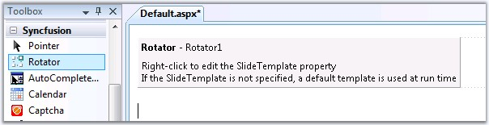
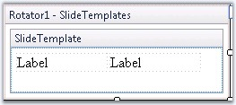

To create the rotator control, follow the below given steps.
1. Create a new Web Form application and drag the Rotator control.
|
[ASPX]
<cc1:Rotator ID="Rotator1" runat="server"> </cc1:Rotator> |

18. The control can be edited at design time by selecting the Edit Template option through smart tags (right click the control) or verbs (arrow symbol at top right on selecting the control). Modify the template and choose End Template Editing. In the below screenshot, labels are added.

Figure 346: Modifying the Slide Template
19. Set the Height and ScrollInterval properties for the controls.
20. To display a single slide at a time, set the height (for vertical scroll) and width (for horizontal scroll) of the rotator control, similar to that of the slide.
21. The data can be displayed inside the rotator only through databinding. Please refer to the Databinding topic to know about the support for various types of databinding.